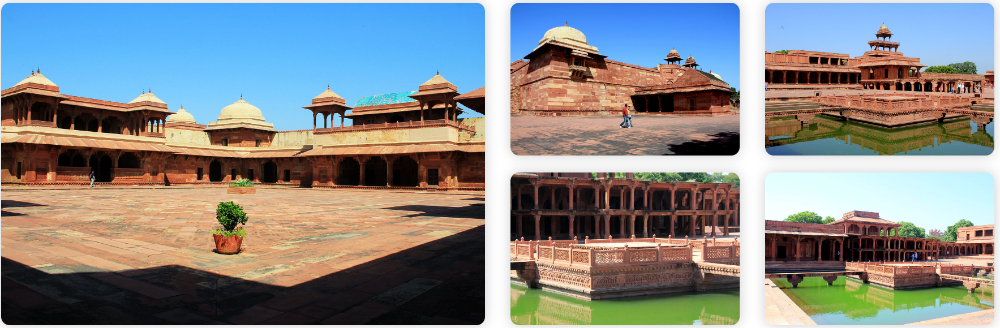

The beautiful marble tomb of Sheikh Salim Chisti attracts thousands of tourists at places like Diwan-I-Aam, Diwan-I-Khas, Buland Darwaza, Panch Mahal, Jodha Bai’s Palace, Pachisi and Birbal Bhavan. The desire for a son led Mughal Emperor Akbar to many holy men and finally to the renowned Sufi Saint Sheikh Salim Chishti who lived in an isolated cave near Sikri. The Saint blessed Akbar and soon a son was born to him in 1569. The grateful Emperor named his son Salim after the Saint and built the grand Jama Masjid near the saint’s dwelling. To the west of this mosque lie two graves-one of the saint and the other of his infant son.In further memory of the Saint, Akbar vowed to build a great city. Thus, emerged the splendid city of Fatehpur Sikri on a stony ridge. A splendid citadel of grand courts, palaces, Mosques and gardens that rivaled the splendors of Delhi and Agra. Today even after a passage of hundreds of years, the magnificence of this royal city has not faded. Its courtyards, pavilions and audience halls lie immaculately preserved in tribute to a visionary and builder extra ordinaire. One finds minor monuments like the Rang Mahal, Kabutar Khana, Hathi Pole, Sangin Burj, Hiran Minar and the Karawan Sarai. The magnificent buildings in Fatehpur Sikri can be divided into two categories the religious and the secular. On one hand are the imposing Jama Masjid with the Buland Darwaza, the most stupendous Gateway of India standing 176ft. high. The Buland Darwaza was erected in the year 1602, to commemorate Akbar’s conquest over Deccan. The doorway is richly carved with verses from the Holy Quran cut in bold Arabic letters. The Dargah of Sheikh Salim Chishti, built of pure white marble, was completed in 1581. Devotees from all over the world throng in thousands to the heart of the citadel to view the white marble tomb set in the royal mosque. They sing his praise, tie a red thread in the latticed windows and above all pray to the Saint for the gift of a child. His death anniversary, known as his Urs is a major assembly of devotees from all over the world. On the other side are the other important buildings like the Diwan-I-Khas, Jodha Bai’s Palace, Mariam’s Palace, Birbal’s Palace, House of the Turkish Sultana and Panch Mahal, all depicting a variety of architectural styles. The Panch Mahal is a five story structure, each of which has a pillared hall smaller than the one below it. Based on 176 richly carved columns, the building served the purpose of a recreation room for the ladies of the royal harem. Other monuments leading to the palace of Jodha Bai are Khwabgah (house of dreams), Anup Talao, Abdar Khana, Pachisi Court, Ankh Micholi (the place where Akbar used to play hide and seek with the ladies of the harem and which later became the imperial treasury), Astrologer’s Seat, Daftar Khana, Ibadat Khana and Haram Sar
